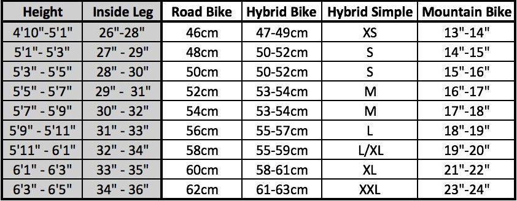

Bike Product Knowledge Research + Notes
https://www.active.com/cycling/articles/a-beginner-s-guide-to-buying-a-bike-870028/slide-6
- most concise and easiest to understand for a beginner like me with pictures
- “Don't go out and buy a $5,000 bike. You can have an awfully good time on a $500 bike."
https://www.yellowjersey.co.uk/the-draft/buying-a-bike/
- goes over in customer’s lenses of what types of questions and thoughts to consider when choosing a bicycle
- very detailed explanation of the bicycle features and analysis for customers to decide which to buy
Why are you buying a bicycle?
- What do I want to do on my bicycle?
- Where do I want to go?
- How much time/skill do I have looking after a bike?
- What’s your plan for 6 to 12 months time?
Setting a Budget/Getting a Deal
- You will need to budget for more than just the bike. Additional costs such as helmets, bottle cages and gloves can add up very quickly.
- Second hand bikes can be a good option if you know what you’re looking for and are happy to wait until the right size/condition comes up on the market near you.
- Waiting until after September until buying a bicycle can be beneficial as the big manufacturers tend to start reducing their current models to get ready for their new launches in the New Year.
- Unlike house prices, bike prices don’t fluctuate that much, so another 6 months of saving money can get you a bike that you will be happier with and is likely to last longer.
- Price range:
- Road bike: $700-10,000
- Mountain bike: $200-$3,000
- Hybrid bike: $300-$2,000
- Lifestyle bike: $199-$700
Choosing a Bike - Types and Styles
Road bike: quick progress on the roads with the least effort possible
- narrow, slick tires
- drop handlebars which allow multiple hand positions
- rigid frames allowing more power transfer
- gear ratios with large ranges to allow you to spin up hills and move quickly on the flats
Mountain bike: off-road/trail riding
- generally have suspension either front or full and wide, grippy tires
- mudd tires
- generally heavier than road/hybrid bikes due to suspension and to make them more durable on rough terrain
- normally have motorcycle style disc brakes which are better at stopping in muddy conditions
- lower gearing to allow you to get up steep inclines
- Hybrid bike: on a spectrum between mountain and road bike
- narrower, generally slick tyres
- higher gearing for faster speeds
- taken from a mountain bike:
- higher position which makes them ideal for seeing over cars in traffic
- flat handlebars
- a more relaxed position with less pressure on your shoulders
- they sometimes have suspension
- primarily for city riders, commuting, people who take on a mix of terrain, riding with the family, touring,... (they are normally the cheapest type of bike)
- Other Bike Types (less likely to be your first purchase)
- based on Road bikes: Cyclocross, Gravel, Time trial
- based on Mountain bikes: Downhill, Fat bike, Jump bike
- Electric bike
- City bike
- BMX (Bicycle motor cross)
- Recumbent
- Folding
- Single speed / fixed gear / fixie
Choosing a Bike - Materials
- traditional material
- renowned for their comfort, strength and durability
- relatively affordable
- easy to repair as dents or bends can be hammered out
- rust much faster than aluminium (not suitable in a wet or humid climate)
- generally heavier than aluminium or carbon fibre (not so good for all out performance)
- naturally lightweight and stiff (greater power transfer through the frame)
- isn’t prone to rust
- a reliable material choice, though the extra stiffness in the frames compared to steel means they can be less comfortable
- 5-10 years of lifespan
- non-metal material
- very lightweight and stiff but still incredibly strong
- can be manipulated into aerodynamic shapes and fine tuned for increased stiffness and strength in specific areas on the frame
- can last a lifetime if well maintained
Choosing a Bike - Frame size

Choosing a Bike - Components and Specifications
- gears
- brakes (rim vs disc)
- wheels
Choosing a Bike - Things to not worry about
Test rides: Overrated. Research: Overlooked.
FOR YOU
- helmet
- gloves
- padded cycling shorts
- cycling specific jersey
- bike specific shoes
| FOR THE BIKE
- bottle cages and bottles
- saddle bag
- basic on the road repair tools
- spare inner tubes
- lights
- bike computer
- clipless pedals
| FOR THE GARAGE
- bike cleaning set
- track pump
- hex keys
- spray lubricant
- grease
- bike stand
|
What big questions will a buyer will be faced with? What priorities might they have? What did you run into that you didn't understand, and now you do?
It is the most important for the buyer to set a budget price, whether it be how much they are willing to pay or how much they really need to pay – there could be a big gap if the buyer is not knowledged enough to make the ‘just right’ choice. For beginners, they would most likely prioritize the size, style, and price (which was the case for me as well). However, after doing research, I believe it is also very important to prioritize the material as it has a very direct influence onto not just the priorities mentioned above, but also makes sure that the function suits your needs.
What bicycle would you want to buy and what would you use it for? What features do you care about? How will you know if it fits you? How will you select a brand and price point?
Since I am a beginner in bicycling, I would want to buy the most basic and affordable type. I would buy a hybrid bike and probably it would be steel because I value comfort a lot. I care about the size, comfort, convenience, and style.
https://www.bikesonline.com/
Towards the bottom of the homepage, I came across “Shop by Category” and I chose “City and Hybrid” then chose “Comfort & Cruiser”. I saw on the sidebar different brands but since I don’t recognize any, I don’t care about which brand. Since I won’t be riding the bicycle very frequently, I would set my price budget on the lower end. I see a few options ranging from $449 to $499 and which since I don’t care extra much of the style, I would not mind choosing within the few options.